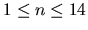

Let us consider the following version of the Domino game:
- A domino piece has two sides, each of them numbered from 0 to 6.
- The game is played with 28 pieces. A piece having both sides with the same number is called a double piece.
- We will consider a two-player version of the game: each player receives a set of pieces and both sets are equal in size.
- The player who received the largest-valued double piece begins the game placing down this piece, thus starting a configuration with two extremes.
- Each player, in turn, has to place down one of his (her) pieces, always at one of the extremes of the current configuration, if and only if that piece has one of its sides matching the number at the outer side of the extreme piece. The piece is placed so that the sides with matching numbers are adjacent to each other. No special treatment is given to a double piece in that regard: it is placed down with one of its matching sides adjacent to the extreme piece.
- Whenever a player has no piece matching one of the extremes, then he (she) passes his (her) turn.
- The winner is that player who first places down all of his pieces.
Suppose the two players are named Red and Green. Given initial sets of pieces assigned to each of Red and Green, your problem is to determine whether (i) only one of them can win, or (ii) both of them can win, or (iii) none of them can win the game. Remember that this is not a problem of finding winning strategies. You just have to find out the winning possibility of each player.
The input file may contain several instances of the problem. Each instance consists of one line in the following format:
n r11 r12 r21 r22 ... rn1 rn2 g11 g12 ... gn1 gn2
where:
- n is the size of the subsets assigned to Red and Green; you may assume that
;
- ri1 ri2 is the i-th piece assigned to player Red;
- gi1 gi2 is the i-th piece assigned to player Green;
- no pieces are repeated;
- at least one player is assigned a double piece;
- each of ri1 ri2 gi1 gi2 is an integer number from 0 to 6.
An arbitrary number of blank spaces may separate a number from its neighbours in the input line of an instance. Consecutive instances are NOT separated by blank lines. The last line has n = 0.
For each instance of the problem, your program should print one line containing one of the four messages:
Only player Red can win
Only player Green can win
Both players can win
No player can win
A blank line separates the outputs of two consecutive instances.
1 6 6 0 0
2 5 5 3 4 1 5 3 5
2 1 1 2 2 3 3 4 4
1 4 5 4 4
0
Only player Red can win
Both players can win
No players can win
Only player Green can win
Miguel A. Revilla
2000-02-09